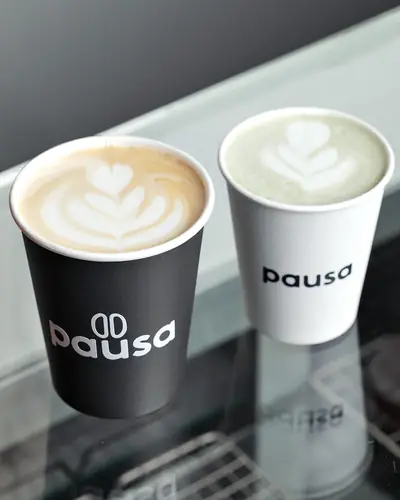
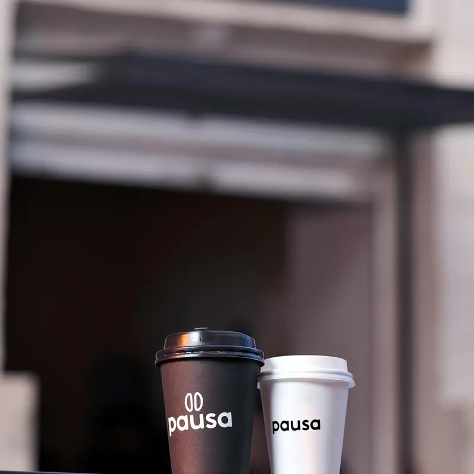
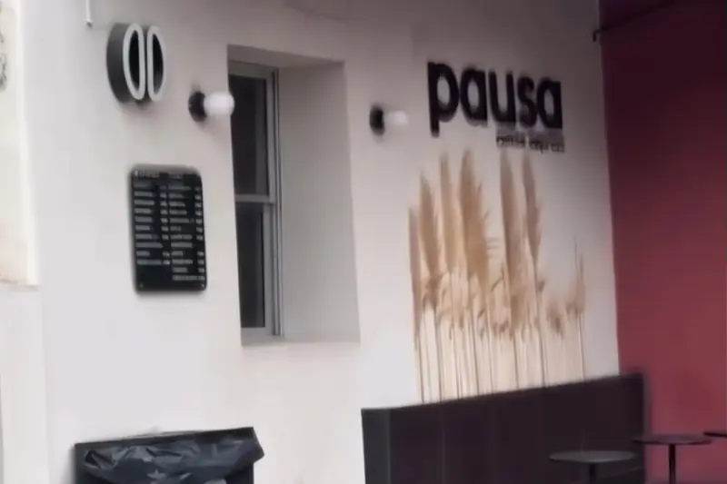
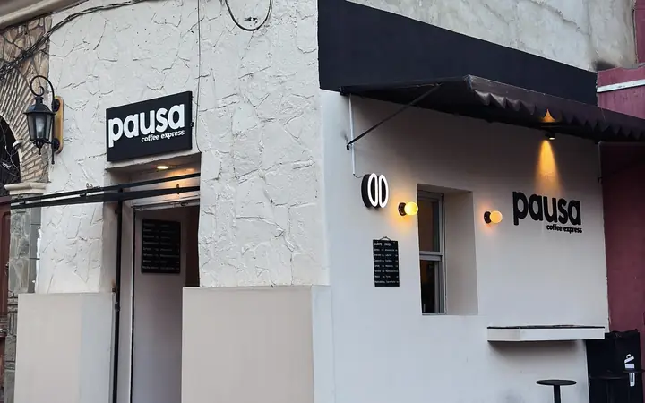
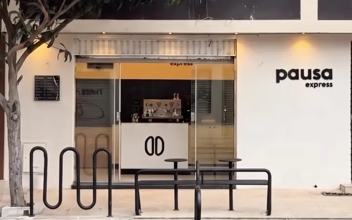
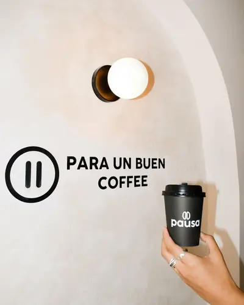

Calientes
Espresso, americano, cortado, flat white, matcha latte, Pausa Mocca y más.
Ver precios y pedir →Propuesta académica UCB · no es el sitio oficial de Pausa

Pides por WhatsApp, pagas con QR y retiras al pasar. Centro de Tarija.
Propuesta académica UCB · no es el sitio oficial de Pausa
Tres pasos desde tu celular.

Lunes a sábado, de 8:00 a 12:00 y de 15:00 a 20:00.



Cada compra suma, también las que haces por WhatsApp.
«…te sirven súper rápido»
«…hidden gem»